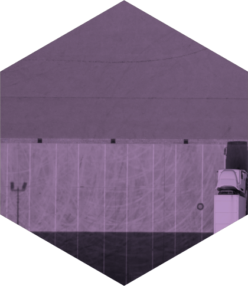
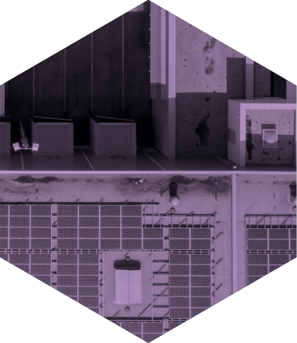

La nouvelle voie pour la continuité des activités
La COVID-19 a bouleversé la façon dont les entreprises abordent la prévention des menaces et la reprise des activités.
Même pour les entreprises qui ont les plans de continuité des activités les plus robustes, la pandémie de COVID-19 a révélé des points faibles dans l’évaluation et l’atténuation traditionnelles des risques. Les exercices de simulation ne pouvaient prédire les efforts de planification du gouvernement à l’échelle fédérale ou provinciale, et même la planification la plus solide en fonction du pire scénario ne permettait pas de prévoir la durée de la pandémie de COVID-19. Il est possible d’estimer les pertes liées à des dommages aux immeubles de bureaux causés par des incendies ou des ouragans. Mais comment une entreprise peut-elle élaborer un plan pour un virus qui se propage à travers les régions et le temps?
Parallèlement, les autres facteurs (en anglais) qui déclencheraient habituellement des changements en matière de continuité des activités – fusions et acquisitions, modifications réglementaires, planification de la relève – n’ont pas disparu et, dans certains cas, sont devenus plus urgents. Les chaînes d’approvisionnement juste-à-temps, qui ont généralement aidé les entreprises à demeurer concurrentielles sur le plan des marges, représentent maintenant un fardeau opérationnel puisque les perturbations mondiales font en sorte que certaines entreprises ne disposent que d’un petit stock de fournitures. Pour certaines entreprises, l’embauche et le recrutement ont été complètement interrompus, tandis que d’autres se précipitent pour augmenter leur effectif afin de répondre à de nouveaux besoins imprévus.
Si l’on prend en considération l’ensemble de ces facteurs, la plupart des organisations n’ont jamais eu à faire face à autant de variables en même temps. Par conséquent, les conseillers en continuité des activités ont réécrit leurs listes de vérification pour l’évaluation et l’atténuation des risques. La liste de vérification ci-dessous fournit des directives sur la façon dont les organisations peuvent soutenir l’analyse de leurs plans de continuité des activités dans le contexte actuel et au-delà.
SIMPLIFIER LA CONTINUITÉ DES ACTIVITÉS
1
La première tâche à accomplir pour comprendre et atténuer le risque dans une situation en pleine évolution est de déterminer ce qui est essentiel à sa mission. Si par exemple vous exploitez une chaîne de restauration de hamburgers, ce qui est essentiel, au bout du compte, c’est de continuer à servir des hamburgers aux clients.
Êtes-vous en mesure de déterminer la partie la plus importante de votre entreprise, de votre produit et de votre service et de laisser toutes les autres fonctions de côté?
Pendant combien de temps ces éléments essentiels peuvent-ils être inaccessibles avant que leur perte n’ait une incidence négative sur l’entreprise?
Votre service des TI peut-il rétablir le matériel informatique et les logiciels essentiels dans un délai suffisant pour répondre aux besoins de l’entreprise?
Comment définissez-vous les actifs essentiels, comme les bases de données et les dossiers vitaux?
FORMER UNE ÉQUIPE D’INTERVENTION
2
Lorsqu’on a demandé aux répondants d’un sondage mondial d’Aon qui était responsable de la gestion des risques, ce qui comprend la continuité des activités en tant que sous-ensemble essentiel, plus des deux tiers ont répondu qu’il s’agissait du chef de la direction ou du chef des finances. Un autre tiers a déclaré que cette responsabilité tombait dans la catégorie
« autre », ce qui a amené certains conseillers à conclure que trop d’organisations positionnent le rôle de gestionnaire de risques trop bas dans la chaîne de gestion.
Pouvez-vous déterminer aujourd’hui qui devrait faire partie du processus d’intervention en cas de catastrophe naturelle ou de menace importante?
Si oui, ces personnes savent-elles qu’elles font partie des employés essentiels et comprennent-elles leur rôle lorsqu’il s’agit d’aider l’entreprise à poursuivre ses activités dans des circonstances anormales?
Des mécanismes sont-ils en place pour soutenir un centre virtuel des opérations d’urgence et augmenter rapidement les capacités de téléconférence?
ÉVALUER LA LOGISTIQUE
4
Lorsqu’une menace émerge, il est important que les entreprises envisagent de redéfinir les priorités d’approvisionnement de leur gamme de produits afin de faire face aux aléas du marché, d’augmenter les niveaux d’approvisionnement de fournitures essentielles et de modifier les chaînes d’approvisionnement, au besoin.
Avez-vous déterminé et quantifié la résilience de votre chaîne d’approvisionnement, tant sur le plan interne qu’externe?
Avez-vous préapprouvé d’autres fournisseurs au cas où certains fournisseurs principaux ne seraient pas disponibles?
Avez-vous un mécanisme en place qui permet aux fournisseurs et aux principaux clients de discuter ouvertement des répercussions sur leurs activités?
ÉTABLIR DES POLITIQUES ET DES PROCÉDURES
3
L’emplacement de travail des employés est devenu une préoccupation principale pendant la pandémie de COVID-19 et demeurera probablement un enjeu majeur pour les années à venir. Les entreprises doivent établir des lignes directrices claires pour que les employés se rendent au travail ou continuent de travailler efficacement à distance, ce qui constitue un élément clé de la continuité
des activités.
Avez-vous élaboré des politiques pour aider les employés à se sentir à l’aise de travailler au bureau, à la maison ou selon un modèle hybride (au bureau et à la maison)?
Une équipe est-elle en place pour fournir aux employés des renseignements factuels et à jour sur les politiques?
Avez-vous mis en place un plan vous permettant de passer rapidement à l’action si les employés commencent à présenter des symptômes de la COVID-19 au travail ou si une évacuation est nécessaire?

Retour en haut

